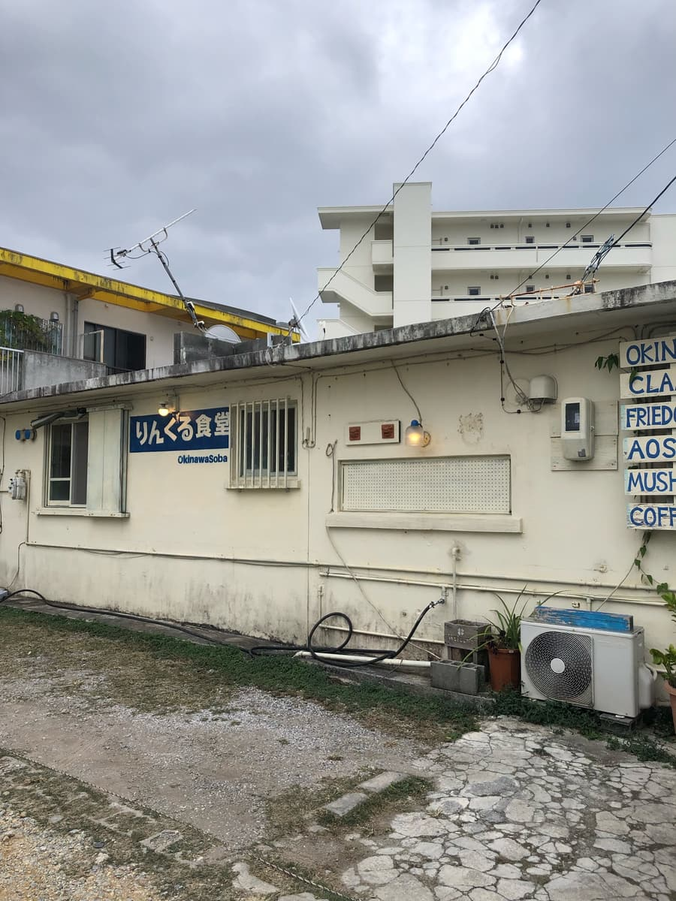
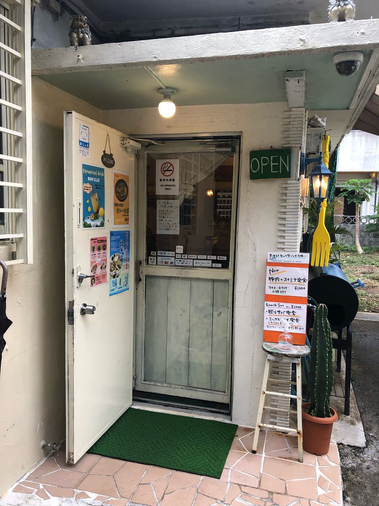
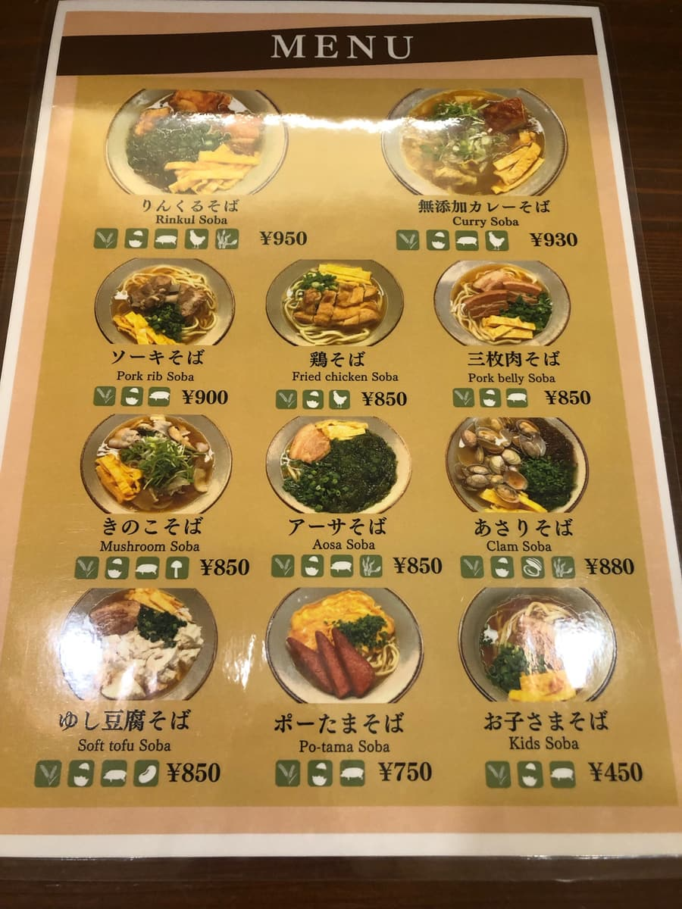
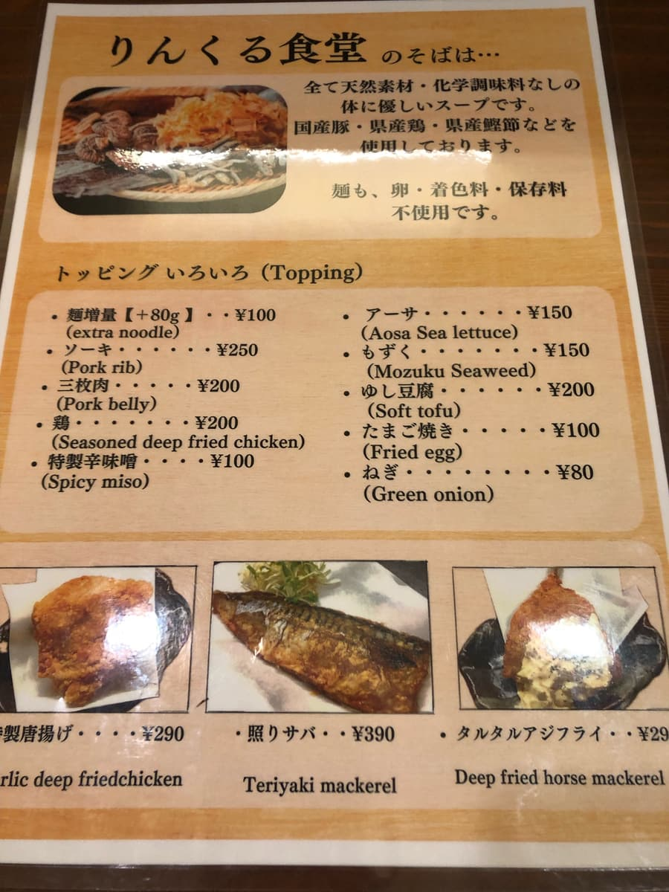
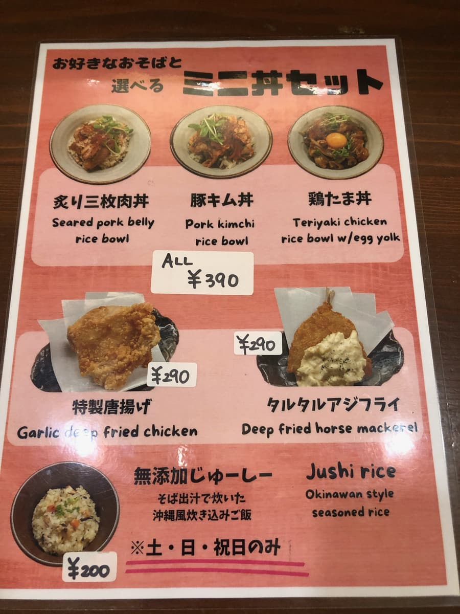
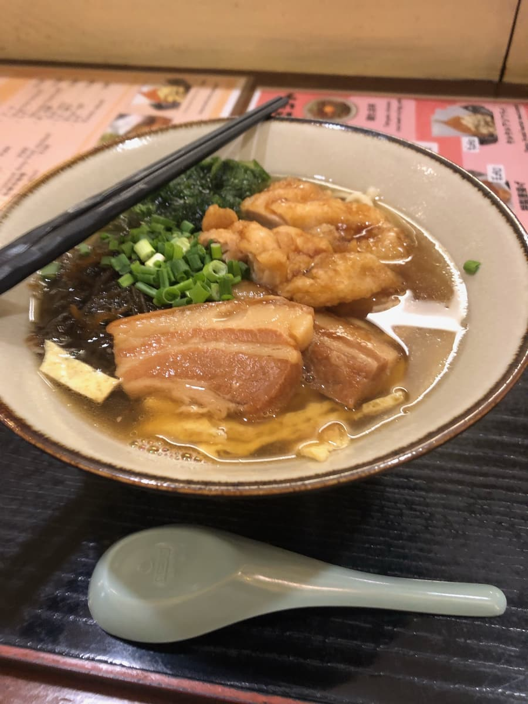
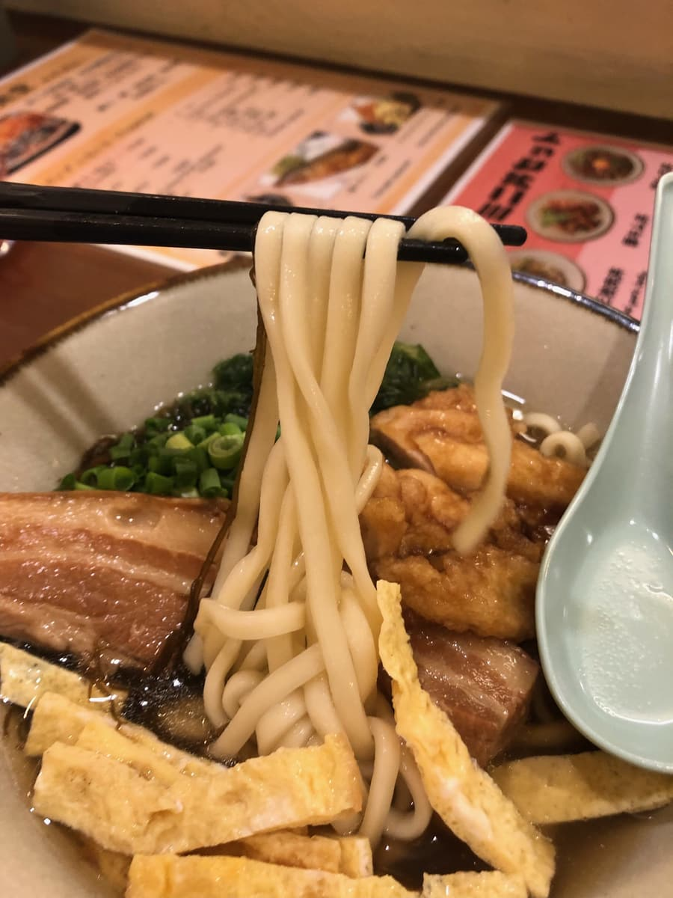

I went to eat here in December 2023 😊 It was during the "13th Okinawa Soba Stamp Rally (2023.10.1–2024.2.29)", so I wanted to eat at a participating shop, but there weren't any nearby, so I decided to eat at this shop, which isn't part of the stamp rally but which I'd been curious about for a while.


If you go a little into the seaward blocks off Route 58 in Chatan Town, there's a neighborhood of foreigners' houses, and this shop has renovated a former foreigners' house into a café-like atmosphere 😁
I went inside and checked the menu.


There are lots of kinds of Okinawa soba 😄 "Mushroom soba" and "clam soba" are menu items I'm seeing for the first time, ones other shops don't have.

This time I ordered the "Rinkuru soba", which shares the shop's name, sits at the top of the menu, and seems to be the recommendation lol

The "Rinkuru soba" has arrived 😁 My eyes went to the toppings first. Braised pork belly (sanmai-niku), thinly sliced omelet, mozuku, green onion, sea lettuce (āsa), and chicken — I thought it was like an "everything-on-top" Okinawa soba of the items this shop handles. It reminded me of Futami Soba in Nago City (introduced as a shop that holds its own against the recommended ones) lol
But first, as usual, the soup 😆 Mm, it's a bonito broth soup with a strong bonito flavor. As explained on the menu, they advertise no chemical seasonings, no colorings, and no preservatives, so they seem particular about their ingredients.
However, it reminded me of a recent national news story where a shop selling muffins at some event, with a similar organic mindset, sold them as kid-friendly muffins with no preservatives and half the sugar, but the people who ate them got food poisoning (^0^;)
Scientifically, chemical seasonings have the same components as natural ingredients, so I think you don't really need to worry about them, and extreme, excessive organic thinking calls for caution.
That said, this shop's soup is gentle with no problems at all, so rest assured 😄

Next I try the noodles. The medium-thick straight noodles are a bit on the soft side.
As for the toppings, first, the sea lettuce has a briny aroma of the sea and is delicious 😆 It reminded me of the "āsa soba" at "Nakamura Soba" in Onna Village lol
I couldn't really tell whether the chicken was chicken tempura, fried chicken, or chicken nanban, but it had a sweetish seasoning and I thought it was very delicious. I thought this topping was a nice new one I'd never seen at other shops 😄 The braised pork belly, however, had a bit of a sinewy texture, which was a shame.
Rating (9.5/15): Simply tasty. The sea lettuce and chicken (tempura? fried? nanban?) toppings in particular were delicious, and I thought they were new toppings. The shop is in a foreigners' house, so I thought tourists can enjoy Okinawa soba in a nice atmosphere too — how about trying it once?
Noodles: ★★★☆☆（3）
Soup: ★★★☆☆（3）
Toppings: ★★★✬☆（3.5）